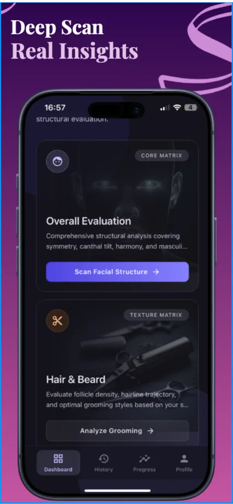
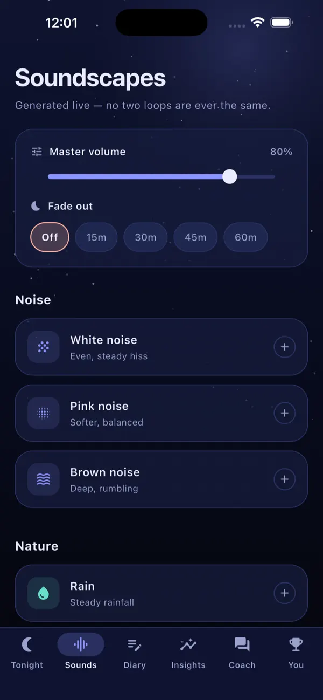
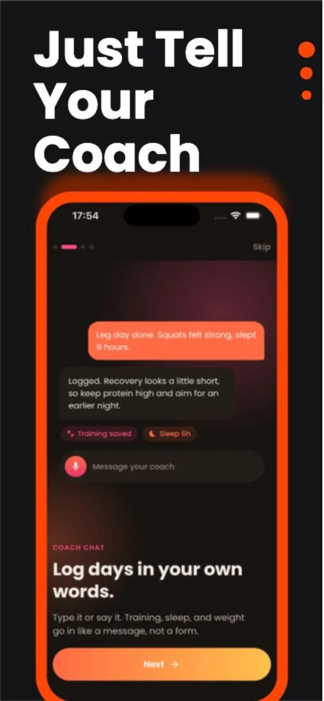

1 · Typography on three key frames
The display face carries titles; Manrope does the work.
Home · hero
Building for
Solarity AI · Built around you
Building for
human potential.
AI-powered self-improvement apps, and the systems we are developing to build, operate, and grow them.
Investors & Partners · opener
Products today.
Investors & strategic partners
Products today.
Possibility ahead.
Focused consumer apps. A vision for the systems behind them. Explore the products, then the company direction.
Consumer apps4
Platform vision3 modules
FounderAta Turhan
Looks Max · product opening
Looks Max
A more considered approach to self-care.
For people making grooming and self-care part of their daily routine. Looks Max brings facial analysis and personalized guidance into a single app.

Decision 1: which display face? A1 Newsreader gives real title contrast at 112px and still reads at 40px. A2 Instrument Serif is lighter and more fashion, but common on startup sites. B adds no font file but keeps the site in one voice, which is part of why it reads as average today.
2 · Product color worlds
Each app stands in its own light.
IQ Max
Cognitive practiceSleep Max
Sleep & daily routines
Fitness Max
Fitness & nutrition
Decision 2: do these four hues match how you see each product? They are sampled to sit beside each app's own icon and store art. Ivory text is never set on the vivid world color itself; for example, ivory on the Fitness ember is only 2.8:1.
3 · Header over the sunrise
The sky reaches the top of the screen.
Today · solid bar
Proposed · floating over the sky
390px · proposed
Decision 3: float the header over the hero on Home only? Interior pages keep a solid bar. Once the hero scrolls away, the Home bar turns solid too. Without JavaScript it stays solid.
4 · One day of light
Pages move from blue hour to golden hour.
night #0d1014
blue hour #12161b
base #0f0d0b
first light #17110c
golden #24170c
footer #0b0907
sun-core #ffcf7a
primary action, one word
primary action, one word
gold #e9b56a
active and current
active and current
sand #d6bf9a
labels, folios
labels, folios
bronze #9c7446
rules, borders only
rules, borders only
ember #d9782f
glow only
glow only
No decision needed here; this shows how the light tokens behave. Final values are tuned in rendered review during Phase P1.